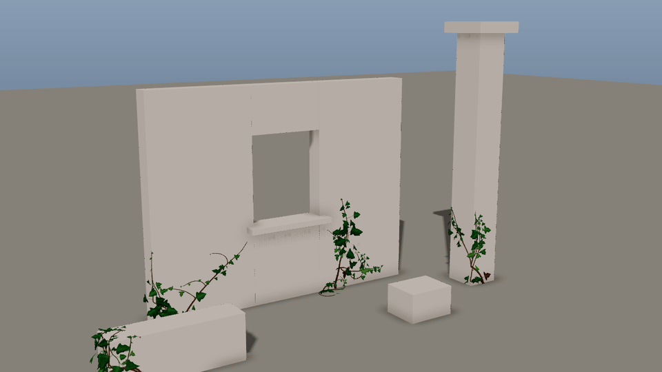
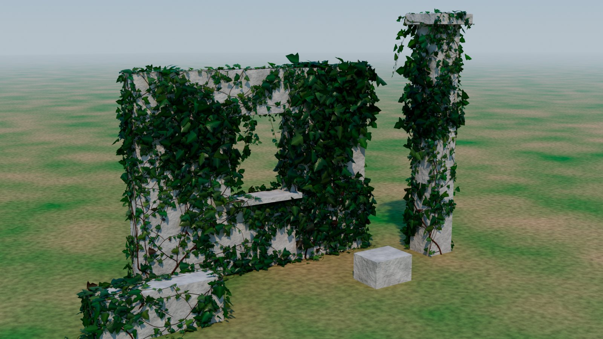
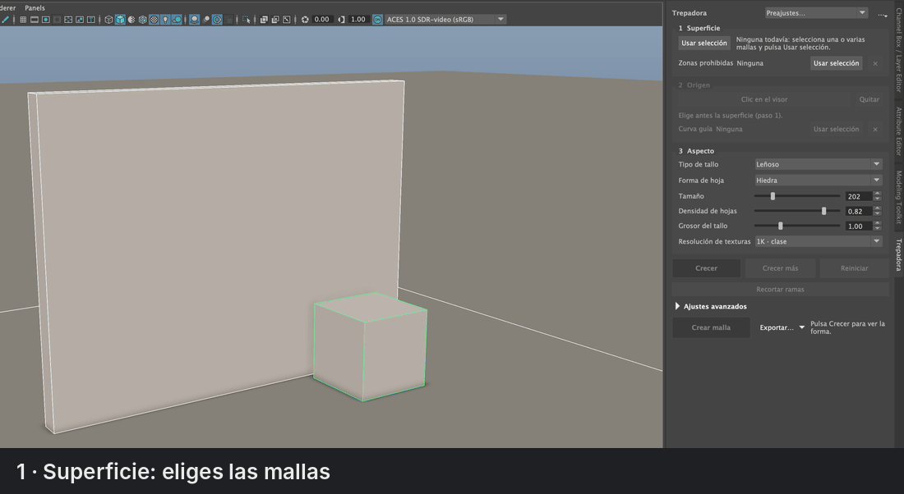
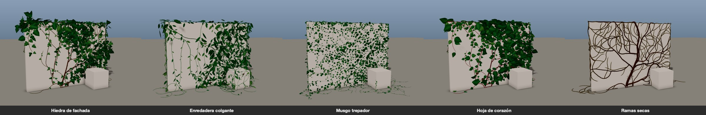
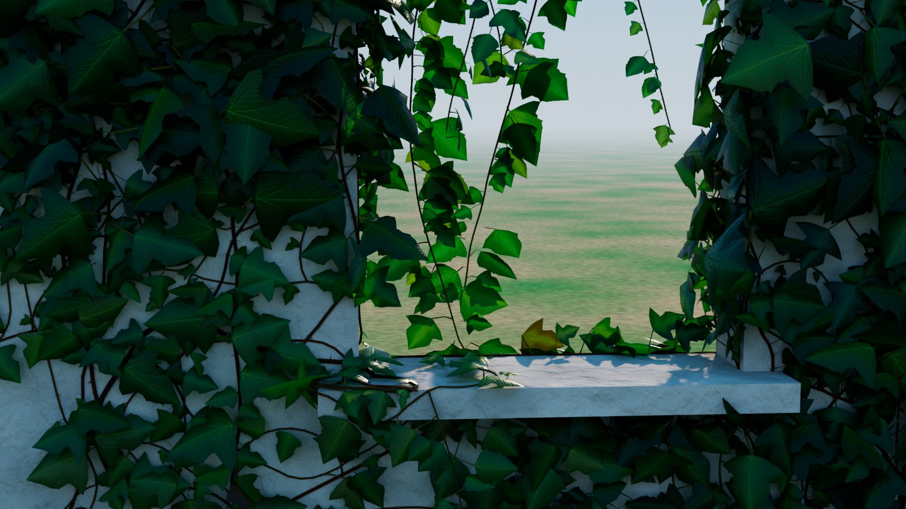
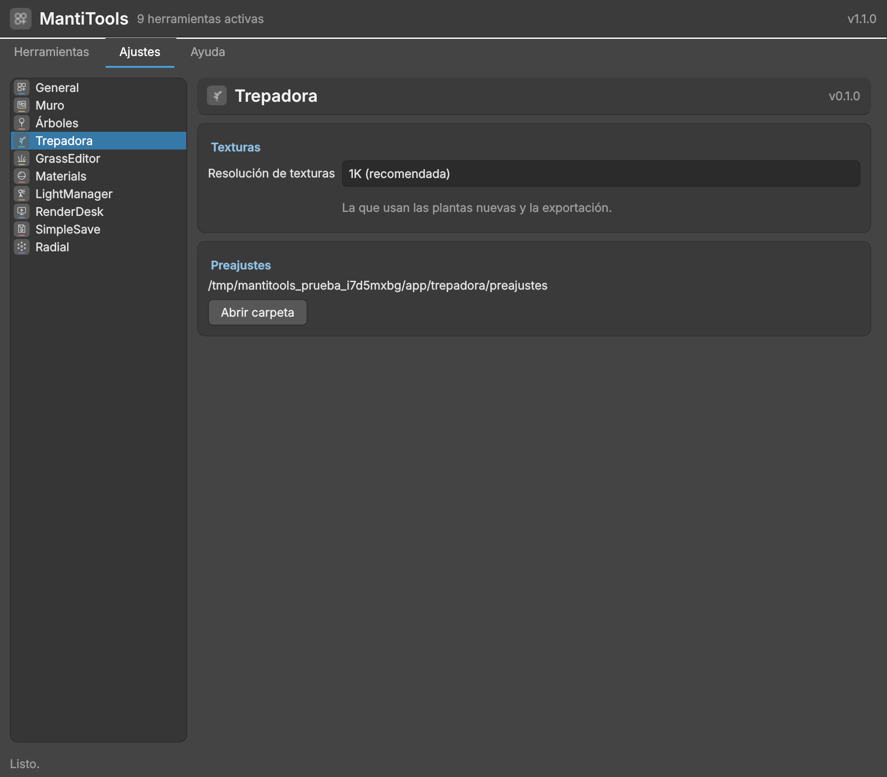

Para qué sirve
Eliges las mallas por las que trepa (un muro, una columna, una ruina entera), dices dónde nace y Trepadora hace crecer la planta: tallos con grosor, raíces adhesivas, rabillos y miles de hojas, lista para renderizar con Arnold o para exportar a un motor de juego. Mismos ajustes y misma semilla dan siempre la misma planta.

La ventana en cuatro pasos

Clic en el icono Trepadora. La ventana se puede acoplar y recuerda dónde la dejaste. Los pasos se activan en orden:
- Superficie. Selecciona las mallas por las que trepa y pulsa Usar selección. Si entre lo seleccionado hay localizadores, se usan como puntos de nacimiento.
- Origen (opcional). Clic en el visor sobre la superficie donde nace cada planta. Sin orígenes, nace en el centro de la base.
- Aspecto. Tipo de tallo, forma de hoja, tamaño, densidad de hojas y grosor del tallo. Pulsa Crecer para ver la forma como líneas, que es rápido. Crecer más la hace más grande sin empezar de cero.
- Crear malla. Crea los tallos, las hojas y los materiales. Todo se deshace con un solo Ctrl+Z; Esc detiene el crecimiento y conserva lo crecido.

El pie de la ventana dice cuántas hojas saldrán y si la carga es baja, media o alta.
Control artístico
Zonas prohibidas
Pon una caja delante de una ventana o una puerta, selecciónala y pulsa Usar selección en esa fila. La planta la rodea y no crece por dentro. Después puedes ocultarla con H: la planta la sigue esquivando.

Curva guía
Dibuja una curva sobre la pared (Create › Curve Tools › EP Curve Tool), selecciónala y pulsa Usar selección en esa fila. La planta crece a lo largo de ella; cuánto la sigue lo dice Seguir la guía en los ajustes avanzados.

Recortar ramas
Activa Recortar ramas y haz clic sobre una línea de la vista previa: la rama se corta por ahí, con todo lo que brota más allá. Q o el mismo botón para terminar.

Preajustes
El desplegable de arriba trae cinco: Hiedra de fachada, Enredadera colgante, Musgo trepador, Hoja de corazón y Ramas secas. Con el botón … guardas los tuyos y los importas o exportas como .json.

Materiales y texturas
Con Arnold cargado, cada pieza lleva un material OpenPBR que toma el color de cada hoja y le suma nervios, relieve, brillo y la luz que deja pasar la hoja a contraluz. Las texturas vienen incluidas en cuatro tamaños:
| Resolución | Para qué |
|---|---|
| 512 | Juegos y escenas con muchas plantas |
| 1K | Trabajo diario (por defecto) |
| 2K | Renders |
| 4K | Renders de cerca |

Las escenas de versiones anteriores usaban aiStandardSurface: MantiTools › Convertir materiales a OpenPBR las pasa al material nuevo. Ver OpenPBR.
Exportar
Clic derecho en el icono › Exportar planta guarda la planta seleccionada:
- FBX para Unity o Unreal, con materiales.
- Alembic para otros programas de 3D.
Al lado se crea la carpeta <nombre>_texturas con las texturas. Exportar con hojas ligeras cambia cada hoja por una tarjeta de seis vértices: pesa unas doce veces menos y la silueta la da la transparencia del PNG.
Consejos
- La escena recuerda: superficie, zonas, orígenes, curva y ajustes se guardan en la escena.
- Para repetir una planta, selecciónala y usa … › Copiar los ajustes de la planta seleccionada.
- Clic derecho en el icono › Escena de prueba sencilla o ruina para practicar.
- Si la planta deja de crecer, ya llenó su espacio o sus ramas llegaron al largo máximo: Crecer más o añade otra malla.
En el estante
| Cómo | Orden |
|---|---|
| Clic en el icono | Abrir Trepadora |
| Clic derecho | Escena de prueba sencilla |
| Clic derecho | Escena de prueba: ruina |
| Clic derecho | Exportar planta |
| Clic derecho | Exportar con hojas ligeras |
| Clic derecho | Convertir materiales a OpenPBR |
Ajustes en MantiTools

Texturas
| Ajuste | Valores | Qué hace | Clave |
|---|---|---|---|
| Resolución de texturas | 512 (aula, rápido), 1K (recomendada), 2K, 4K (render final) | La que usan las plantas nuevas y la exportación. | resolucion |
Preajustes
| Ajuste | Valores | Qué hace | Clave |
|---|---|---|---|
| Abrir carpeta | Botón |